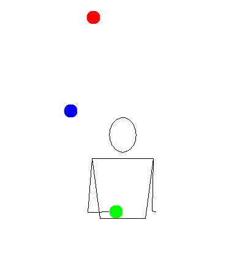

Three in One Hand

Description
Prerequisites
Tutorial
Tips
- This trick will require a lot of height. In order to effectively maintain the pattern, you will need consistency and height. Although conceptually easy, this trick takes some time to learn due to this.